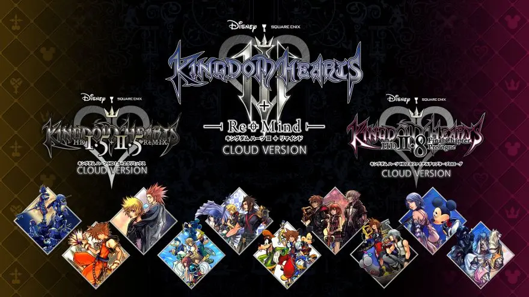

宇多田 ヒカル
N E W S
2022/2/10 RELEASE
「Face My Fears (A. G. Cook Remix)」 のミュージックビデオがYouTubeプレミア公開！ 全世界から大反響！
先日先行配信された最新アルバム「BADモード」が国内配信ランキング1位のほか世界21カ国・地域で上位ランクインするなど大ヒット中の宇多田ヒカル。2月23日（水・祝）には初回生産限定盤を含むCDアルバムの発売を控えています。
そのCD発売を前に、本アルバムにボーナストラックとして収録されている「Face My Fears (A. G. Cook Remix)」のミュージックビデオが2月10日公開されました！
本ビデオは同日発売されたNintendo Switchクラウドバージョンの「キングダム ハーツ」シリーズのリリースを記念し、公開されたもの。制作は REAL ROCK DESIGNの映像チームが担当し、「キングダム ハーツ」シリーズの名シーンを曲にあわせて再構築。
本ビデオのプレミア公開の告知が開始されるやいなや、コメント欄には世界各国のファンから書き込みが寄せられ、あらためて「キングダム ハーツ」シリーズとそのテーマソングの世界的人気を裏付けることになりました。
楽曲自体も宇多田ヒカル自身初の全米ビルボードのHOT100にランクインした『Face My Fears (English Version) / Hikaru Utada & Skrillex “KINGDOM HEARTS III” Opening Theme Song』を、同じくアルバムに収録されている「One Last Kiss」「君に夢中」を共同プロデュースした A. G. CookによりREMIXされたもの。
2月23日に発売されるアルバムにも本REMIXを含む3バージョンの「Face My Fears」が収録されているので、様々なバージョンの「Face My Fears」を是非CHECKください！
※Face My Fears (A .G. Cook Remix) YouTube URL：
https://youtu.be/SbT55Ggd__E<back to list